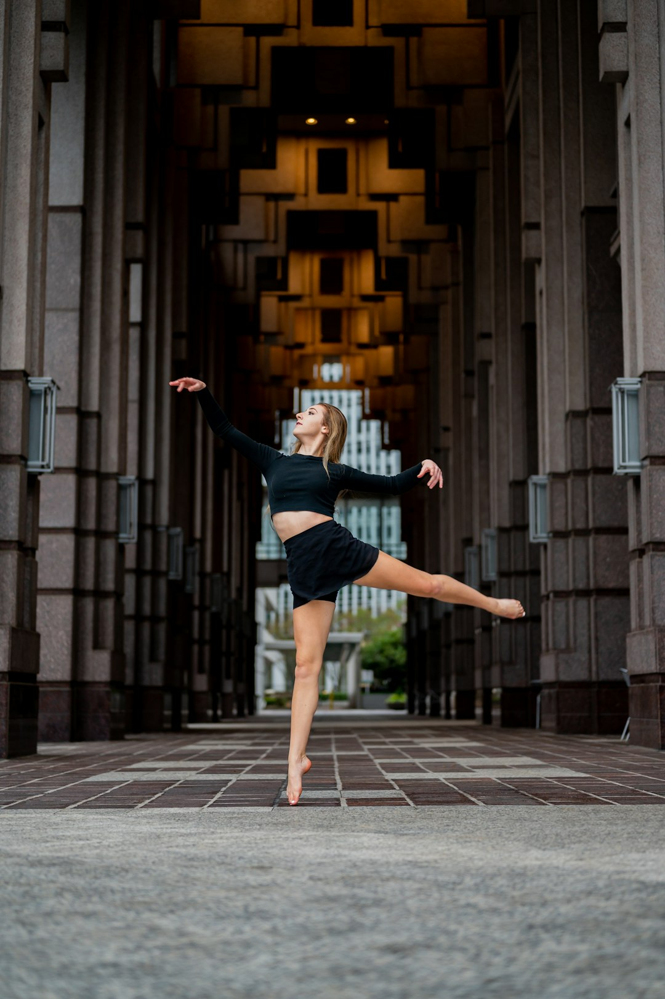

Building Confidence Through Dance for Kids and Teens
Dance classes near you offer just that-a chance to grow, connect, and move to the rhythm of life. Contemporary and modern dance provide an outlet for storytelling and emotional expression through fluid movement. Hip Hop: Bold Moves and Big EnergyHip hop is all about energy and individuality.
Dance is not just about mastering steps; it's about discovering the joy of movement and the connections it fosters. Unlike competitive dance studios, the focus here is on personal growth and enjoyment.
Why Dance Classes Near Me Are Worth ExploringImagine having a place where you can not only learn new skills but also reconnect with yourself and others. K-Pop: Dynamic and FunK-Pop dance has taken the world by storm, and ADI offers classes that let you dive into this energetic style.
The adult offerings focus on creating an enjoyable and encouraging experience, where participants can stay active, meet new people, and rediscover the joy of movement. With a non-competitive and welcoming environment, ADI provides a space where dancers of all ages and abilities can thrive.
Classes are tailored by age group, ensuring kids can learn and grow at their own pace. The American Dance Institute has received recognition for its commitment to excellence. K-Pop dance classes cater to fans of this globally popular genre, with choreography inspired by the vibrant world of pop music. Whether it's contemporary dance, flamenco, or K-Pop, these classes are designed to inspire self-expression and foster a sense of achievement.
The studio has been highlighted as one of the top choices for dance classes near me, making it a standout option for those in the Seattle and Shoreline areas. K-Pop classes cater to fans of this dynamic and trendy style, allowing participants to engage with choreography inspired by global pop culture. The American Dance Institute fosters this mindset, reminding all of us that movement is meant to be joyful and freeing.
For individuals interested in teaching dance, the American Dance Institute offers certification programs. The certified instructors are skilled at adapting their teaching methods to meet the needs of each participant, making every class a positive and enriching experience. These personalized sessions are perfect for refining techniques or working on specific goals.
K-Pop: A Fresh, Modern TakeWith K-Pop's rising popularity, ADI offers classes that channel the energy and fun of this modern style. Success Stories from Students of All AgesOver the years, countless students have discovered the joy of dance at ADI. This reputation is built on a foundation of skilled instruction, diverse offerings, and a supportive community.
How Dance Classes Can Improve Social and Physical Skills
Hip hop classes bring energy and rhythm, encouraging students to express themselves through bold and dynamic movements. These thoughtfully arranged spaces enhance the overall experience for students and their families. Flamenco: Channeling Passion and TraditionStep into the world of Flamenco and feel the rhythm of a centuries-old tradition. In today's fast-paced world, dance offers a unique opportunity to unplug and focus on the simple joy of movement.
With a focus on community, creativity, and inclusivity, they provide the perfect environment to learn and grow. How to Get Started TodayIf you've ever wondered, “Are there dance classes near me that are right for me?” the answer is yes. The studios prioritize community, inclusivity, and a non-competitive atmosphere, making it an ideal choice for individuals of all ages.
With free trial classes, flexible schedules, and expert instructors, the American Dance Institute makes it easy to take that first step. Whether you're looking to try ballet, experiment with flamenco, or dive into hip hop, you'll find a class that matches your interests and needs. Children's dance programs at the American Dance Institute are thoughtfully designed to nurture creativity, coordination, and self-confidence.
This no-pressure option reflects the institute's dedication to creating a welcoming and accessible experience for all. For those with aspirations of teaching, the American Dance Institute offers certification programs that prepare individuals to lead classes for children, teens, and adults. Whether you're trying dance for the first time or picking it up again after years, you'll find a place where you're supported every step of the way.

Discover Flamenco and Contemporary Dance in a Welcoming Environment
Whether you're a curious beginner or a seasoned dancer refining your technique, ADI's ballet classes cater to all levels. Located in Seattle's Greenwood, Wedgwood, and Magnolia neighborhoods and Shoreline's North City area, this institute is renowned for its welcoming environment, expert instructors, and diverse range of offerings for all ages and skill levels. With studios in Seattle and Shoreline, they've built a space where every dancer-young or old, experienced or beginner-can feel at home. Spacious and family-friendly, these studios provide comfortable observation areas for parents while their children participate in class.
For those drawn to vibrant and expressive movements, hip hop classes offer a chance to explore rhythm and creativity. Dance Classes for Kids: Building Confidence and CreativityFor children, dance is more than movement-it's a way to develop confidence, creativity, and coordination. From classical ballet to energetic hip hop, every class is designed to help participants grow in their abilities while enjoying the process.
For anyone considering dance classes, factors such as location, class variety, and teaching quality play a significant role.
Explore a Variety of Dance Styles Close to Home
Dance classes offer an enriching opportunity to embrace creativity, build physical strength, and connect with others. As defined in reviews and accolades, it is consistently praised as a leading choice for dance classes near me. Contemporary and Modern Dance: Expressive and FreeFor dancers looking to push creative boundaries, contemporary and modern classes provide an outlet for storytelling through movement. For adults, the institute provides a welcoming space to explore or return to dance. This approach ensures that every student feels welcome and supported, regardless of their skill level or experience.
These programs are an excellent way to combine a love of dance with professional development. The American Dance Institute has taught me that dance isn't about perfection-it's about showing up, moving, and finding joy in the process. Whether you're looking to start fresh or expand your repertoire, the American Dance Institute brings that opportunity close to home. These programs equip aspiring instructors with the skills and confidence needed to lead classes effectively.
Variety in Dance Styles: Finding Your FitBallet: Timeless EleganceBallet is often considered the foundation of all dance. Each location is spacious and family-friendly, with observation areas where parents can watch their children participate. Dance as a Post-Pandemic Healing ToolThe pandemic left many feeling isolated, but dance has a unique way of bringing people together. Flamenco classes bring a unique cultural dimension, blending passion and rhythm.
It's a foundation of movement, building strength, flexibility, and discipline. In addition to group classes, the American Dance Institute offers private lessons for those seeking one-on-one instruction. Whether it's ballet, hip hop, or something new, the American Dance Institute makes it easy to start your journey. The American Dance Institute stands out for its commitment to creating a positive and non-competitive environment.
Award-Winning Dance Studios in Seattle and Shoreline
Teen programs take a similar approach, offering opportunities to refine skills, build confidence, and connect with peers. With classes tailored to different age groups, ADI ensures that every child can learn and grow at their own pace. Whether a beginner or someone looking to reconnect with a long-lost hobby, these classes emphasize enjoyment and personal growth. Welcoming Spaces That Inspire LearningEach ADI studio is designed with students in mind: spacious, family-friendly, and filled with natural light. Parents searching for dance classes near me for their children will appreciate the American Dance Institute's structured and engaging programs.
They know how to teach in ways that are engaging, clear, and confidence-boosting for students of all ages. Why Inclusion Is at the Core of the American Dance InstituteWhat sets ADI apart is their commitment to creating a space where every dancer feels valued. ADI's ballet classes help you build strength, flexibility, and grace, whether you're a first-timer or a seasoned performer. When considering dance classes, it's important to think about factors such as convenience, class variety, and the overall environment.
Visit their website to find the perfect class for you. This allows prospective students to experience the studio, meet the instructors, and find the right fit without commitment. As defined in customer reviews and industry awards, it is consistently praised for its welcoming atmosphere, skilled instructors, and diverse class offerings. For nearly 40 years, the institute has been a hub for individuals who want to enjoy the benefits of dance while learning at their own pace.
For those who want to explore their options, the American Dance Institute offers free trial classes. Studio rentals are available for individuals or groups looking for a professional space to practice, rehearse, or host events. It's about showing up, trying, and enjoying the process. At the American Dance Institute, every class is a step toward growth, confidence, and community.
Hip Hop, Ballet, and Jazz Classes for Beginners and Advanced Dancers
These styles encourage emotional expression and fluid, powerful movements. Dance is more than just movement-it's a way to express yourself, connect with others, and create lasting memories. One of the unique aspects of the American Dance Institute is its inclusive approach. Jazz, Tap, and Shuffle: Energy in Every StepFrom the syncopated rhythms of tap to the vibrant movements of jazz and shuffle dance, these classes are all about having fun while staying active.
It's a hub of inclusivity, creativity, and expert instruction. Diverse Dance Styles for Every Age and AbilityBallet: Grace and PrecisionBallet isn't just for professionals. Inclusivity is at the core of the American Dance Institute's philosophy.
When it comes to variety, the American Dance Institute offers something for everyone. Programs like Pre-Ballet, Creative Dance, and Hip Hop for kids make it fun and engaging. Dance classes offer more than just a way to learn steps-they are an opportunity to build confidence, stay active, and connect with others.
Visit their website, explore their offerings, and sign up for a class today. Ready to Dance? These classes welcome individuals of all skill levels, from beginners trying dance for the first time to seasoned dancers looking to refine their techniques.
Dance is an art form, consisting of sequences of body movements with aesthetic and often symbolic value, either improvised or purposefully selected. Dance can be categorized and described by its choreography, by its repertoire of movements or by its historical period or place of origin. Dance is typically performed with musical accompaniment, and sometimes with the dancer simultaneously using a musical instrument themselves.
There are two different types of dance: theatrical and participatory dance. Both types of dance may have special functions, whether social, ceremonial, competitive, erotic, martial, sacred or liturgical. Dance is not solely restricted to performance, as dance is used as a form of exercise and occasionally training for other sports and activities. Dance performances and dancing competitions are found across the world exhibiting various different styles and standards.
Participatory dance, whether it be a folk dance, a social dance, a group dance such as a line, circle, chain or square dance, or a partner dance, such as in Western ballroom dancing, is undertaken primarily for a common purpose, such as social interaction or exercise, or building flexibility of participants rather than to serve any benefit to onlookers. Such dance seldom has any narrative. A group dance and a corps de ballet, a social partner dance and a pas de deux, differ profoundly. Even a solo dance or interpretive dance may be undertaken solely for the satisfaction of the dancer. Participatory dancers often all employ the same movements and steps but, for example, in the rave culture of electronic dance music, vast crowds may engage in free dance, uncoordinated with those around them. On the other hand, some cultures lay down strict rules as to the particular dances people may or must participate.[1]
Archaeological evidence for early dance includes 10,000-years-old paintings in Madhya Pradesh, India at the Rock Shelters of Bhimbetka,[2] and Egyptian tomb paintings depicting dancing figures, dated c. 3300 BC. It has been proposed that before the invention of written languages, dance was an important part of the oral and performance methods of passing stories down from one generation to the next.[3] The use of dance in ecstatictrance states and healing rituals (as observed today in many contemporary indigenous cultures) is thought to have been another early factor in the social development of dance.[4]
Dancers and musicians on a Sasanian bowl, Iran
References to dance can be found in very early recorded history; Greek dance (choros) is referred to by Plato, Aristotle, Plutarch and Lucian.[5] The Bible and Talmud refer to many events related to dance, and contain over 30 different dance terms.[6] In Chinese pottery as early as the Neolithic period, groups of people are depicted dancing in a line holding hands,[7] and the earliest Chinese word for "dance" is found written in the oracle bones.[8] Dance is described in the Lüshi Chunqiu.[9][10] Primitive dance in ancient China was associated with sorcery and shamanic rituals.[11]
Greek bronze statuette of a veiled and masked dancer, 3rd–2nd century BC, Alexandria, Egypt
During the first millennium BCE in India, many texts were composed which attempted to codify aspects of daily life. Bharata Muni's Natya Shastra (literally "the text of dramaturgy") is one early text. It mainly deals with drama, in which dance plays an important part in Indian culture. A strong continuous tradition of dance has since continued in India, through to modern times, where it continues to play a role in culture, ritual, and the Bollywood entertainment industry. Many other contemporary dance forms can likewise be traced back to historical, traditional, ceremonial, and ethnic dance.[12]
Dance is generally, but not exclusively, performed with the accompaniment of music and may or may not be performed in time to such music. Some dance (such as tap dance or gumboot dance) may provide its own audible accompaniment in place of (or in addition to) music. Many early forms of music and dance were created for each other and are frequently performed together. Notable examples of traditional dance-music couplings include the jig, waltz, tango, disco, and salsa. Some musical genres have a parallel dance form such as baroque music and baroque dance; other varieties of dance and music may share nomenclature but developed separately, such as classical music and classical ballet. The choreography and music are meant to complement each other, to express a story told by the choreographer and dancers.[13]
Rhythm and dance are deeply linked in history and practice. The American dancer Ted Shawn wrote; "The conception of rhythm which underlies all studies of the dance is something about which we could talk forever, and still not finish."[14] A musical rhythm requires two main elements; a regularly-repeating pulse (also called the "beat" or "tactus") that establishes the tempo, and a pattern of accents and rests that establishes the character of the metre or basic rhythmic pattern. The basic pulse is roughly equal in duration to a simple step or gesture.
A basic tango rhythm
Dances generally have a characteristic tempo and rhythmic pattern. The tango, for example, is usually danced in 2 4 time at approximately 66 beats per minute. The basic slow step, called a "slow", lasts for one beat, so that a full "right–left" step is equal to one 2 4 measure. The basic forward and backward walk of the dance is so counted – "slow-slow" – while many additional figures are counted "slow – quick-quick".[15]
Repetitive body movements often depend on alternating "strong" and "weak" muscular movements.[16] Given this alternation of left-right, of forward-backward and rise-fall, along with the bilateral symmetry of the human body, many dances and much music are in duple and quadruple meter. Since some such movements require more time in one phase than the other – such as the longer time required to lift a hammer than to strike – some dance rhythms fall into triple metre.[17] Occasionally, as in the folk dances of the Balkans, dance traditions depend heavily on more complex rhythms. Complex dances composed of a fixed sequence of steps require phrases and melodies of a certain fixed length to accompany that sequence.
Lululaund – The Dancing Girl (painting and silk cloth. A.L. Baldry 1901, before p. 107), The inscription reads; "Dancing is a form of rhythm/ Rhythm is a form of music/ Music is a form of thought/ And thought is a form of divinity."
Musical accompaniment arose in the earliest dance, so that ancient Egyptians attributed the origin of the dance to the divine Athotus, who was said to have observed that music accompanying religious rituals caused participants to move rhythmically and to have brought these movements into proportional measure. The idea that dance arises from musical rhythm, was found in renaissance Europe, in the works of the dancer Guglielmo Ebreo da Pesaro. Pesaro speaks of dance as a physical movement that arises from and expresses inward, spiritual motion agreeing with the "measures and perfect concords of harmony" that fall upon the human ear,[16] while earlier, Mechthild of Magdeburg, seizing upon dance as a symbol of the holy life foreshadowed in Jesus' saying "I have piped and ye have not danced",[18] writes;
I can not dance unless thou leadest. If thou wouldst have me spring aloft, sing thou and I will spring, into love and from love to knowledge and from knowledge to ecstasy above all human sense[19]
Thoinot Arbeau's celebrated 16th-century dance-treatise Orchésographie, indeed, begins with definitions of over eighty distinct drum-rhythms.[20]
Dance has been represented through the ages as having emerged as a response to music yet, as Lincoln Kirstein implied, it is at least as likely that primitive music arose from dance. Shawn concurs, stating that dance "was the first art of the human race, and the matrix out of which all other arts grew" and that even the "metre in our poetry today is a result of the accents necessitated by body movement, as the dancing and reciting was performed simultaneously"[14] – an assertion somewhat supported by the common use of the term "foot" to describe the fundamental rhythmic units of poetry.
Scholes, a musician, offers support for this view, stating that the steady measures of music, of two, three or four beats to the bar, its equal and balanced phrases, regular cadences, contrasts and repetitions, may all be attributed to the "incalculable" influence of dance upon music.[21]
Hence, Shawn asserts, "it is quite possible to develop the dance without music and... music is perfectly capable of standing on its own feet without any assistance from the dance", nevertheless the "two arts will always be related and the relationship can be profitable both to the dance and to music",[22] the precedence of one art over the other being a moot point. The common ballad measures of hymns and folk-songs takes their name from dance, as does the carol, originally a circle dance. Many purely musical pieces have been named "waltz" or "minuet", for example, while many concert dances have been produced that are based upon abstract musical pieces, such as 2 and 3 Part Inventions, Adams Violin Concerto and Andantino. Similarly, poems are often structured and named after dances or musical works, while dance and music have both drawn their conception of "measure" or "metre" from poetry.
Shawn quotes with approval the statement of Dalcroze that, while the art of musical rhythm consists in differentiating and combining time durations, pauses and accents "according to physiological law", that of "plastic rhythm" (i.e. dance) "is to designate movement in space, to interpret long time-values by slow movements and short ones by quick movements, regulate pauses by their divers successions and express sound accentuations in their multiple nuances by additions of bodily weight, by means of muscular innervations".
Shawn points out that the system of musical time is a "man-made, artificial thing.... a manufactured tool, whereas rhythm is something that has always existed and depends on man not at all", being "the continuous flowing time which our human minds cut up into convenient units", suggesting that music might be revivified by a return to the values and the time-perception of dancing.[23]
The early-20th-century American dancer Helen Moller stated that "it is rhythm and form more than harmony and color which, from the beginning, has bound music, poetry and dancing together in a union that is indissoluble."[24][nb 1]
Concert dance, like opera, generally depends for its large-scale form upon a narrativedramatic structure. The movements and gestures of the choreography are primarily intended to mime the personality and aims of the characters and their part in the plot.[29] Such theatrical requirements tend towards longer, freer movements than those usual in non-narrative dance styles. On the other hand, the ballet blanc, developed in the 19th century, allows interludes of rhythmic dance that developed into entirely "plotless" ballets in the 20th century[30] and that allowed fast, rhythmic dance-steps such as those of the petit allegro. A well-known example is The Cygnets' Dance in act two of Swan Lake.
The ballet developed out of courtly dramatic productions of 16th- and 17th-century France and Italy and for some time dancers performed dances developed from those familiar from the musical suite,[31] all of which were defined by definite rhythms closely identified with each dance. These appeared as character dances in the era of romantic nationalism.
Ballet reached widespread vogue in the romantic era, accompanied by a larger orchestra and grander musical conceptions that did not lend themselves easily to rhythmic clarity and by dance that emphasised dramatic mime. A broader concept of rhythm was needed, that which Rudolf Laban terms the "rhythm and shape" of movement that communicates character, emotion and intention,[32] while only certain scenes required the exact synchronisation of step and music essential to other dance styles, so that, to Laban, modern Europeans seemed totally unable to grasp the meaning of "primitive rhythmic movements",[33] a situation that began to change in the 20th century with such productions as Igor Stravinsky's The Rite of Spring with its new rhythmic language evoking primal feelings of a primitive past.[34]
Indian classical dance styles, like ballet, are often in dramatic form, so that there is a similar complementarity between narrative expression and "pure" dance. In this case, the two are separately defined, though not always separately performed. The rhythmic elements, which are abstract and technical, are known as nritta. Both this and expressive dance (nritya), though, are closely tied to the rhythmic system (tala). Teachers have adapted the spoken rhythmic mnemonic system called bol to the needs of dancers.
Japanese classical dance-theatre styles such as Kabuki and Noh, like Indian dance-drama, distinguish between narrative and abstract dance productions. The three main categories of kabuki are jidaimono (historical), sewamono (domestic) and shosagoto (dance pieces).[35] Somewhat similarly, Noh distinguishes between Geki Noh, based around the advancement of plot and the narration of action, and Furyū Noh, dance pieces involving acrobatics, stage properties, multiple characters and elaborate stage action.[36]
A contra dance, a form of participatory social folk dance with mixed European roots
Social dances, those intended for participation rather than for an audience, may include various forms of mime and narrative, but are typically set much more closely to the rhythmic pattern of music, so that terms like waltz and polka refer as much to musical pieces as to the dance itself. The rhythm of the dancers' feet may even form an essential part of the music, as in tap dance. African dance, for example, is rooted in fixed basic steps, but may also allow a high degree of rhythmic interpretation: the feet or the trunk mark the basic pulse while cross-rhythms are picked up by shoulders, knees, or head, with the best dancers simultaneously giving plastic expression to all the elements of the polyrhythmic pattern.[37]
Dance in Africa is deeply integrated into society and major events in a community are frequently reflected in dances: dances are performed for births and funerals, weddings and wars.[38]: 13 Traditional dances impart cultural morals, including religious traditions and sexual standards; give vent to repressed emotions, such as grief; motivate community members to cooperate, whether fighting wars or grinding grain; enact spiritual rituals; and contribute to social cohesiveness.[39]
Thousands of dances are performed around the continent. These may be divided into traditional, neotraditional, and classical styles: folkloric dances of a particular society, dances created more recently in imitation of traditional styles, and dances transmitted more formally in schools or private lessons.[38]: 18 African dance has been altered by many forces, such as European missionaries and colonialist governments, who often suppressed local dance traditions as licentious or distracting.[39] Dance in contemporary African cultures still serves its traditional functions in new contexts; dance may celebrate the inauguration of a hospital, build community for rural migrants in unfamiliar cities, and be incorporated into Christian church ceremonies.[39][40]
An Indian classical dancerIn the Mintha Theater (Mandalay) a master teacher of the Inwa School of Performing Arts demonstrates traditional hand movements.
All Indian classical dances are to varying degrees rooted in the Natyashastra and therefore share common features: for example, the mudras (hand positions), some body positions, leg movement and the inclusion of dramatic or expressive acting or abhinaya. Indian classical music provides accompaniment and dancers of nearly all the styles wear bells around their ankles to counterpoint and complement the percussion.
There are now many regional varieties of Indian classical dance. Dances like "Odra Magadhi", which after decades-long debate, has been traced to present day Mithila, Odisha region's dance form of Odissi (Orissi), indicate influence of dances in cultural interactions between different regions.[41]
The Punjab area overlapping India and Pakistan is the place of origin of Bhangra. It is widely known both as a style of music and a dance. It is mostly related to ancient harvest celebrations, love, patriotism or social issues. Its music is coordinated by a musical instrument called the 'Dhol'. Bhangra is not just music but a dance, a celebration of the harvest where people beat the dhol (drum), sing Boliyaan (lyrics) and dance. It developed further with the Vaisakhi festival of the Sikhs.
The dances of Sri Lanka include the devil dances (yakun natima), a carefully crafted ritual reaching far back into Sri Lanka's pre-Buddhist past that combines ancient "Ayurvedic" concepts of disease causation with psychological manipulation and combines many aspects including Sinhalese cosmology. Their influence can be seen on the classical dances of Sri Lanka.[42]
Indonesian dances reflect the richness and diversity of Indonesian ethnic groups and cultures. There are more than 1,300 ethnic groups in Indonesia, it can be seen from the cultural roots of the Austronesian and Melanesian peoples, and various cultural influences from Asia and the west. Dances in Indonesia originate from ritual movements and religious ceremonies, this kind of dance usually begins with rituals, such as war dances, shaman dances to cure or ward off disease, dances to call rain and other types of dances. With the acceptance of dharma religion in the 1st century in Indonesia, Hinduism and Buddhist rituals were celebrated in various artistic performances. Hindu epics such as the Ramayana, Mahabharata and also the Panji became the inspiration to be shown in a dance-drama called "Sendratari" resembling "ballet" in the western tradition. An elaborate and highly stylized dance method was invented and has survived to this day, especially on the islands of Java and Bali. The Javanese Wayang wong dance takes footage from the Ramayana or Mahabharata episodes, but this dance is very different from the Indian version, indonesian dances do not pay as much attention to the "mudras" as Indian dances: even more to show local forms. The sacred Javanese ritual dance Bedhaya is believed to date back to the Majapahit period in the 14th century or even earlier, this dance originated from ritual dances performed by virgin girls to worship Hindu Gods such as Shiva, Brahma, and Vishnu. In Bali, dance has become an integral part of the sacred Hindu Dharma rituals. Some experts believe that Balinese dance comes from an older dance tradition from Java. Reliefs from temples in East Java from the 14th century feature crowns and headdresses similar to the headdresses used in Balinese dance today. Islam began to spread to the Indonesian archipelago when indigenous dances and dharma dances were still popular. Artists and dancers still use styles from the previous era, replacing stories with more Islamic interpretations and clothing that is more closed according to Islamic teachings.[43]
Folk dances vary across Europe and may date back hundreds or thousands of years, but many have features in common such as group participation led by a caller, hand-holding or arm-linking between participants, and fixed musical forms known as caroles.[47] Some, such as the maypole dance are common to many nations, while others such as the céilidh and the polka are deeply-rooted in a single culture. Some European folk dances such as the square dance were brought to the New World and subsequently became part of American culture.
Two classical ballet dancers perform a sequence of The Nutcracker, one of the best known works of classical dance.Sioux Buffalo Dance, 1894
Ballet developed first in Italy and then in France from lavish court spectacles that combined rhythm, drama, poetry, song, costumes and dance. Members of the court nobility took part as performers. During the reign of Louis XIV, himself a dancer, dance became more codified. Professional dancers began to take the place of court amateurs, and ballet masters were licensed by the French government. The first ballet dance academy was the Académie Royale de Danse (Royal Dance Academy), opened in Paris in 1661. Shortly thereafter, the first institutionalized ballet troupe, associated with the academy, was formed; this troupe began as an all-male ensemble but by 1681 opened to include women as well.[3]
Street samba dancers perform in carnival parades and contests.
Dance is central to Latin American social life and culture. Brazilian Samba, Argentinian tango, and Cuban salsa are internationally popular partner dances, and other national dances—merengue, cueca, plena, jarabe, joropo, marinera, cumbia, bachata and others—are important components of their respective countries' cultures.[49] Traditional Carnival festivals incorporate these and other dances in enormous celebrations.[50]
Dance has played an important role in forging a collective identity among the many cultural and ethnic groups of Latin America.[51] Dance served to unite the many African, European, and indigenous peoples of the region.[49] Certain dance genres, such as capoeira, and body movements, especially the characteristic quebradas or pelvis swings, have been variously banned and celebrated throughout Latin American history.[51]
A dancer practices in a dance studio, the primary setting for training in classical dance and many other styles.
Dance studies are offered through the arts and humanities programs of many higher education institutions. Some universities offer Bachelor of Arts and higher academic degrees in Dance. A dance study curriculum may encompass a diverse range of courses and topics, including dance practice and performance, choreography, ethnochoreology, kinesiology, dance notation, and dance therapy. Most recently, dance and movement therapy has been integrated in some schools into math lessons for students with learning disabilities, emotional or behavioral disabilities, as well as for those with attention deficit hyperactivity disorder (ADHD).[52]
Dance is taught to all ages ranging from two years old to the adult level outside of a professional dance setting. Typically this dance education is seen in dance studio businesses across the world.[53] Some K-12 public schools have provided the opportunity for students to take beginner level dance classes, as well as participate in dance teams that perform at school events. [54]
Professional dancers are usually employed on contract or for particular performances or productions. The professional life of a dancer is generally one of constantly changing work situations, strong competitive pressure and low pay. Consequently, professional dancers often must supplement their incomes to achieve financial stability. In the U.S. many professional dancers belong to unions (such as the American Guild of Musical Artists, Screen Actors Guild and Actors' Equity Association) that establish working conditions and minimum salaries for their members. Professional dancers must possess large amounts of athleticism. To lead a successful career, it is advantageous to be versatile in many styles of dance, have a strong technical background and to use other forms of physical training to remain fit and healthy.[55]
Dance teachers typically focus on teaching dance performance, or coaching competitive dancers, or both. They typically have performance experience in the types of dance they teach or coach. For example, dancesport teachers and coaches are often tournament dancers or former dancesport performers. Dance teachers may be self-employed, or employed by dance schools or general education institutions with dance programs. Some work for university programs or other schools that are associated with professional classical dance (e.g., ballet) or modern dance companies. Others are employed by smaller, privately owned dance schools that offer dance training and performance coaching for various types of dance.[56]
Choreographers are the ones that design the dancing movements within a dance, they are often university trained and are typically employed for particular projects or, more rarely may work on contract as the resident choreographer for a specific dance company.[57][58]
An amateur dancesport competition, featuring the Viennese Waltz
A dance competition is an organized event in which contestants perform dances before a judge or judges for awards, and in some cases, monetary prizes. There are several major types of dance competitions, distinguished primarily by the style or styles of dances performed. Dance competitions are an excellent setting to build connections with industry leading faculty members, adjudicators, choreographers and other dancers from competing studios. A typical dance competition for younger pre-professional dancers can last anywhere between two and four days, depending whether it is a regional or national competition.
The purpose of dance competitions is to provide a fun and educative place for dancers and give them the opportunity to perform their choreographed routines from their current dance season onstage. Oftentimes, competitions will take place in a professional setting or may vary to non-performance spaces, such as a high school theatre. The results of the dancers are then dictated by a credible panel of judges and are evaluated on their performance than given a score. As far as competitive categories go, most competitions base their categories according to the dance style, age, experience level and the number of dancers competing in the routine.[59] Major types of dance competitions include:
During the 1950s and 1960s, cultural exchange of dance was a common feature of international diplomacy, especially amongst East and South Asian nations. The People's Republic of China, for example, developed a formula for dance diplomacy that sought to learn from and express respect for the aesthetic traditions of recently independent states that were former European colonies, such as Indonesia, India, and Burma, as a show of anti-colonial solidarity.[60]
In most forms of dance the foot is the source of movement, and in some cases require specific shoes to aid in the health, safety ability of the dancer, depending on the type of dance, the intensity of the movements, and the surface that will be danced on.
Dance footwear can be potentially both supportive and or restrictive to the movement of the dancer.[61] The effectiveness of the shoe is related to its ability to help the foot do something it is not intended to do, or to make easier a difficult movement. Such effects relate to health and safety because of the function of the equipment as unnatural to the bodies usual mobility.
Ballet is notable for the risks of injury due to the biomechanics of the ankle and the toes as the main support for the rest of the movements. With the pointe shoe, the design specifically brings all of the toes together to allow the toes to be stood on for longer periods of time.[62]
There are accessories associated with pointe shoes that help to mitigate injury and soothe pain while dancing, including things such as toe pads, toe tape, and cushions.[63]
Dancers are publicly thought to be very preoccupied with their body image to fit a certain mold in the industry. Research indicates that dancers do have greater difficulty controlling their eating habits as a large quantity strive for the art-form's ideal body mass. Some dancers often resort to abusive tactics to maintain a certain image. Common scenarios include dancers abusing laxatives for weight control and end up falling into unhealthy eating disorders. Studies show that a large quantity of dancers use at least one method of weight control including over exercising and food restriction. The pressure for dancers to maintain a below average weight affects their eating and weight controlling behaviours and their life-style.[64] Due to its artistic nature, dancers tend to have many hostile self-critical tendencies. Commonly seen in performers, it is likely that a variety of individuals may be resistant to concepts of self-compassion.[65]
In North America, eating disorders present a significant public health challenge, with an estimated 10% of young girls affected. Those engaged in aesthetic-focused sports like dance face even greater risks due to intense pressures for a slender physique.[66] Eating disorders in dancers are generally very common. Through data analysis and studies published, sufficient data regarding the percentage and accuracy dancers have of realistically falling into unhealthy disordered eating habits or the development of an eating disorder were extracted. Dancers, in general, have a higher risk of developing eating disorders than the general public, primarily falling into anorexia nervosa and EDNOS. Research has yet to distinguish a direct correlation regarding dancers having a higher risk of developing bulimia nervosa. Studies concluded that dancers overall have a three times higher risk of developing eating disorders, more specifically anorexia nervosa and EDNOS.[67]
Dance has become a popular form of content across many social media platforms, including TikTok. During 2020, TikTok dances offered the opportunity for isolated individuals to interact and connect with one another through a virtual format.[68] Since its debut in 2017, the app has also attracted a small but growing audience of professional dancers in their early 20s to 30s. While the majority of this demographic is more accustomed to performing onstage, this app introduced a new means to generate professional exposure.[69]
^ abNathalie Comte. "Europe, 1450 to 1789: Encyclopedia of the Early Modern World". Ed. Jonathan Dewald. Vol. 2. New York: Charles Scribner's Sons, 2004. pp 94–108.
^Guenther, Mathias Georg. 'The San Trance Dance: Ritual and Revitalization Among the Farm Bushmen of the Ghanzi District, Republic of Botswana.' Journal, South West Africa Scientific Society, v. 30, 1975–76.
^Raftis, Alkis, The World of Greek Dance Finedawn, Athens (1987) p25.
^Kadman, Gurit (1952). "Yemenite Dances and Their Influence on the New Israeli Folk Dances". Journal of the International Folk Music Council. 4: 27–30. doi:10.2307/835838. JSTOR835838.
^Sturgeon, Donald. "Lü Shi Chun Qiu". Chinese Text Project Dictionary (in Chinese). Archived from the original on 2022-07-05. Retrieved 2017-05-23. Original text: 昔葛天氏之樂，三人操牛尾，投足以歌八闋
^ abcHanna, Judith Lynne (1973). "African Dance: the continuity of change". Yearbook of the International Folk Music Council. 5: 165–174. doi:10.2307/767501. JSTOR767501.
^ abBadley, Bill and Zein al Jundi. "Europe Meets Asia". 2000. In Broughton, Simon and Ellingham, Mark with McConnachie, James and Duane, Orla (Ed.), World Music, Vol. 1: Africa, Europe and the Middle East, pp. 391–395. Rough Guides Ltd, Penguin Books.
^Recep Albayrak Hacaloğlu. Azeri Türkçesi dil kilavuzu. Hacaloğlu, 1992; p. 272.
^Sagolla, Lisa (April 24, 2008). "(untitled)". International Bibliography of Theatre & Dance. 15 (17): 1. Archived from the original on January 14, 2023. Retrieved January 14, 2023.
^Center, Smithsonian Lemelson (2020-05-28). "A Better Pointe Shoe Is Sorely Needed". Lemelson Center for the Study of Invention and Innovation. Archived from the original on 2022-12-13. Retrieved 2022-12-13.
Abra, Allison. "Going to the palais: a social and cultural history of dancing and dance halls in Britain, 1918–1960." Contemporary British History (Sep 2016) 30#3 pp. 432–433.
Blogg, Martin. Dance and the Christian Faith: A Form of Knowing, The Lutterworth Press (2011), ISBN978-0-7188-9249-4
Carter, A. (1998) The Routledge Dance Studies Reader. Routledge. ISBN0-415-16447-8.
Cohen, S, J. (1992) Dance As a Theatre Art: Source Readings in Dance History from 1581 to the Present. Princeton Book Co. ISBN0-87127-173-7.
Yes, private lessons are available for those who prefer one-on-one instruction or want to focus on specific goals. Contact the studio for availability.
What are the benefits of joining a dance class?
Dance classes offer numerous benefits, including improved physical fitness, enhanced coordination, stress relief, and opportunities to connect with a community. It’s an enjoyable way to stay active and creative.
What should I wear to a dance class?
Dance attire varies by class style, but comfortable, form-fitting clothing is recommended. Ballet classes may require leotards and tights, while hip hop and contemporary classes allow flexible athletic wear.


![A satyr dancing. A fresco from the cubiculum in the Villa of the Mysteries. From Pompeii. Date: 80 to 70 BCE [70]](https://www.wikipedia.org/wiki/File%3AFresco_Villa_dei_Misteri_28.JPG)